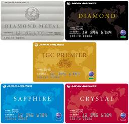
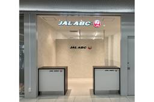
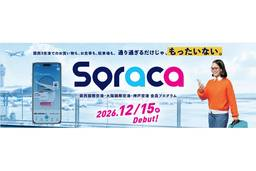
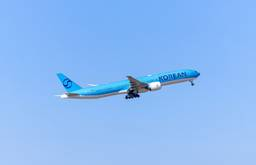

AIRLINE web -月刊エアライン×航空旅行-
https://airline.ikaros.jp
飛行機の運航を支える最前線、魅力あふれる空の旅のサービス、飛ぶためのテクノロジーやエアライン・空港の最新ビジネス動向、飛来機の撮影＆投稿など趣味として楽しむ航空の世界まで幅広く情報をお届けします。
フィード

ANAが2027年度入社の内定式開催、平澤社長が「安全の担い手」としての自覚呼びかけ
AIRLINE web -月刊エアライン×航空旅行-
ANAが、2027年入社の内定式を開催。 ANAは10月3日、2027年度入社内定式を実施した。2026年の内定式はANA Blue Baseを会場に、職種別に2日に分けて実施される。10月3日の出席者はグローバルスタ […]The post ANAが2027年度入社の内定式開催、平澤社長が「安全の担い手」としての自覚呼びかけ first appeared on AIRLINE web -月刊エアライン×航空旅行-.
8時間前

成田空港第1ターミナルにドッグウェアブランド「monchéri POPUP STORE」が期間限定オープン
AIRLINE web -月刊エアライン×航空旅行-
「monchéri POPUP STORE」。 10月3日から11月2日までの1か月間、成田空港第1ターミナル本館4階AIRPORT MALL内にドッグウェアブランドの「monchéri POPUP STORE」が期間 […]The post 成田空港第1ターミナルにドッグウェアブランド「monchéri POPUP STORE」が期間限定オープン first appeared on AIRLINE web -月刊エアライン×航空旅行-.
16時間前

AIRDO、10月機内販売に2027年ベア・ドゥカレンダーなど登場
AIRLINE web -月刊エアライン×航空旅行-
「ベア・ドゥ卓上カレンダー＆オリジナルシールセット」。 AIRDOは10月1日から、ベア・ドゥをデザインした2027年卓上カレンダーと、北海道広尾町産の鮭とばを収めたミニチュア鮭箱の機内販売を開始した。 「ベア・ドゥ […]The post AIRDO、10月機内販売に2027年ベア・ドゥカレンダーなど登場 first appeared on AIRLINE web -月刊エアライン×航空旅行-.
17時間前

スターフライヤー、機内販売で“小倉コーラ”など新商品
AIRLINE web -月刊エアライン×航空旅行-
シャチと季節のフライトタグ＜秋冬＞ アクリルチャーム付／アクリルキーリングセット／オリジナルアロマ リップバーム／オリジナルスープセット。 スターフライヤーは10月1日から新たに3商品、11月1日から2商品を機内販売に […]The post スターフライヤー、機内販売で“小倉コーラ”など新商品 first appeared on AIRLINE web -月刊エアライン×航空旅行-.
18時間前
ANAシアトル支店長が語る羽田＝シアトル線のいま。路線動向から旅の過ごし方まで
AIRLINE web -月刊エアライン×航空旅行-
全日本空輸株式会社 シアトル支店長の草野 博氏に路線の現状や、おすすめのシアトル旅など現地の魅力を訊いた。 2012年7月25日にANAの成田＝シアトル線が就航してから約14年。成田発着と羽田発着の切り替えを経て、現在 […]The post ANAシアトル支店長が語る羽田＝シアトル線のいま。路線動向から旅の過ごし方まで first appeared on AIRLINE web -月刊エアライン×航空旅行-.
2日前
ZIPAIR サステナブルパートナー機のデカール貼りに密着。貼り付けは約半日で完了
AIRLINE web -月刊エアライン×航空旅行-
ZIPAIRの特別デザイン機のデカール貼付作業を取材。 ZIPAIRは9月28日に、脱炭素化に共に取り組むパートナーのロゴをあしらった特別デザイン機を就航した。 この機体、ボーイング787-8（登録記号：JA828J […]The post ZIPAIR サステナブルパートナー機のデカール貼りに密着。貼り付けは約半日で完了 first appeared on AIRLINE web -月刊エアライン×航空旅行-.
3日前
JAL Agriport、「DINING PORT 御料鶴」で熊本応援プロジェクトスタート。くまモンが初日に駆けつけPR
AIRLINE web -月刊エアライン×航空旅行-
JAL Agriportは、同社が運営を行なう古民家風レストラン「DINING PORT 御料鶴」で「食からつながる、熊本応援プロジェクト」を10月31日まで開催中だ。JALグループの「JAL九州ふっこう応援キャンペー […]The post JAL Agriport、「DINING PORT 御料鶴」で熊本応援プロジェクトスタート。くまモンが初日に駆けつけPR first appeared on AIRLINE web -月刊エアライン×航空旅行-.
3日前

JAL、JGCプレミアの達成条件からJGC入会を撤廃、名称を「JMBプレミア」へ
AIRLINE web -月刊エアライン×航空旅行-
JALは9月30日、FLY ONプログラムにおけるステイタス達成条件およびサービス内容の一部変更を発表した。 適用開始日は、達成条件の変更が2027年1月1日搭乗分から、特典内容の変更が2028年度FLY ONステイ […]The post JAL、JGCプレミアの達成条件からJGC入会を撤廃、名称を「JMBプレミア」へ first appeared on AIRLINE web -月刊エアライン×航空旅行-.
3日前
HAC、食品ロス削減につながる「葡萄と林檎のジュース」、5回目の機内販売
AIRLINE web -月刊エアライン×航空旅行-
「葡萄と林檎のジュース」の機内販売は今回で5回目。 北海道エアシステム（HAC）は、農地所有適格法人AGRISCAPEが生産した「葡萄と林檎のジュース」の機内販売を10月5日より開始する。購入特典として、農園の食用豚の […]The post HAC、食品ロス削減につながる「葡萄と林檎のジュース」、5回目の機内販売 first appeared on AIRLINE web -月刊エアライン×航空旅行-.
4日前
神戸空港開港20周年記念で10組20名に神戸空港発着の旅
AIRLINE web -月刊エアライン×航空旅行-
神戸空港開港20周年を記念した「10組20名さまに神戸空港からの旅をプレゼント！」 関西エアポート神戸は、神戸空港の開港20周年を記念し、「神戸空港 開港20周年記念 10組20名さまに神戸空港からの旅をプレゼント！」 […]The post 神戸空港開港20周年記念で10組20名に神戸空港発着の旅 first appeared on AIRLINE web -月刊エアライン×航空旅行-.
4日前
滑走路や駐機エリアを一望できる絶景ラウンジ。羽田空港、新カードラウンジ「Lounge Us」が10月1日オープン
AIRLINE web -月刊エアライン×航空旅行-
羽田空港に新カードラウンジ「Lounge Us」が10月1日にオープンする。 日本空港ビルデングは10月1日、羽田空港第2ターミナル4階の国内線出発ゲートエリアに、新カードラウンジ「Lounge Us（ラウンジ ユーズ […]The post 滑走路や駐機エリアを一望できる絶景ラウンジ。羽田空港、新カードラウンジ「Lounge Us」が10月1日オープン first appeared on AIRLINE web -月刊エアライン×航空旅行-.
4日前
ANAスーパーフライヤーズカード制度の再変更内容、年間利用額やラウンジ利用ルールなど新制度の背景
AIRLINE web -月刊エアライン×航空旅行-
ANAは9月29日、ANAスーパーフライヤーズカード（SFC）の新たな制度を発表した。4月にラウンジの混雑緩和に対応するために打ち出した新制度に対して、利用者の声を受けて条件などを再変更したものとなる。 1986年に […]The post ANAスーパーフライヤーズカード制度の再変更内容、年間利用額やラウンジ利用ルールなど新制度の背景 first appeared on AIRLINE web -月刊エアライン×航空旅行-.
4日前

セントレア第1ターミナルにJAL ABCカウンターが新規オープン
AIRLINE web -月刊エアライン×航空旅行-
セントレアにて新規オープンするJAL ABCカウンター。 中部国際空港（セントレア）第1ターミナル1階に10月1日、JAL ABCのカウンターが新規オープンする。JAL ABCは、国内主要空港において空港宅配サービスな […]The post セントレア第1ターミナルにJAL ABCカウンターが新規オープン first appeared on AIRLINE web -月刊エアライン×航空旅行-.
5日前
リージョナルプラスウイングス設立4周年、AIRDO・ソラシドエア両社の機内販売商品を交換販売
AIRLINE web -月刊エアライン×航空旅行-
AIRDOとソラシドエアは、共同持株会社「リージョナルプラスウイングス」の設立4周年を記念し、両社の人気商品を相互の機内で販売する初めての特別企画を実施する。10月1日から10月31日までの1か月間限定で、それぞれの商 […]The post リージョナルプラスウイングス設立4周年、AIRDO・ソラシドエア両社の機内販売商品を交換販売 first appeared on AIRLINE web -月刊エアライン×航空旅行-.
5日前
タイ国際航空、セントレア発バンコク行きの深夜便「TGでら夜便」運航再開、1年9か月ぶり
AIRLINE web -月刊エアライン×航空旅行-
セントレア発深夜便「TGでら夜便」。 タイ国際航空は、2027年1月19日より、セントレア発深夜便「TG でら夜便」の運航を再開する。 中部＝バンコク線の、セントレアを0時30分に出発する深夜便（TG647／646便 […]The post タイ国際航空、セントレア発バンコク行きの深夜便「TGでら夜便」運航再開、1年9か月ぶり first appeared on AIRLINE web -月刊エアライン×航空旅行-.
5日前

関西3空港共通の新会員プログラム「Soraca」、12月15日開始
AIRLINE web -月刊エアライン×航空旅行-
関西3空港共通の新会員プログラム「Soraca」12月15日開始。 関西エアポートは、関西国際空港、大阪国際空港（伊丹空港）、神戸空港で共通利用できる新会員プログラム「Soraca」を12月15日に開始する。 「So […]The post 関西3空港共通の新会員プログラム「Soraca」、12月15日開始 first appeared on AIRLINE web -月刊エアライン×航空旅行-.
5日前
スターラックス航空、アメリカン航空とコードシェア開始
AIRLINE web -月刊エアライン×航空旅行-
スターラックス航空は9月30日、アメリカン航空とのコードシェアを開始する。2025年8月に締結したインターライン契約を発展させたもので、スターラックス航空を利用する旅客は、台北を経由してフェニックスまたはロサンゼルスへ […]The post スターラックス航空、アメリカン航空とコードシェア開始 first appeared on AIRLINE web -月刊エアライン×航空旅行-.
5日前
オフセットに頼らない脱炭素への決意。ZIPAIR、パートナー4社のロゴをあしらった特別デカール機を就航
AIRLINE web -月刊エアライン×航空旅行-
ZIPAIRが脱炭素実現への決意をパートナーとともに示す特別デカール機を就航。 ZIPAIRは9月28日、ACTソリューションズジャパン、BSIグループジャパン、成田国際空港（NAA）、双日のパートナー企業4社と連携し […]The post オフセットに頼らない脱炭素への決意。ZIPAIR、パートナー4社のロゴをあしらった特別デカール機を就航 first appeared on AIRLINE web -月刊エアライン×航空旅行-.
5日前
JAL、国際線ファーストクラスのコスメキットとビジネスクラスのアメニティをリニューアル
AIRLINE web -月刊エアライン×航空旅行-
「コスメデコルテ」と「ザ・ギンザ」によるファーストクラスのコスメキット。 JALは、9月中旬より順次、国際線ファーストクラスのコスメキットおよびビジネスクラスのアメニティをリニューアルする。 ファーストクラスでは、日 […]The post JAL、国際線ファーストクラスのコスメキットとビジネスクラスのアメニティをリニューアル first appeared on AIRLINE web -月刊エアライン×航空旅行-.
6日前

大韓航空、アシアナとのマイレージ統合案が承認
AIRLINE web -月刊エアライン×航空旅行-
大韓航空は9月15日、アシアナ航空とのマイレージ統合案について、韓国の公正取引委員会から承認を取得したと発表した。同社は、2025年6月にマイレージ統合案を公正取引委員会へ提出し、約15か月間の検討を経て承認に至った。 […]The post 大韓航空、アシアナとのマイレージ統合案が承認 first appeared on AIRLINE web -月刊エアライン×航空旅行-.
6日前

ZIPAIR、ホノルル線とサンノゼ線の2026年冬スケジュール決定
AIRLINE web -月刊エアライン×航空旅行-
株式会社ZIPAIR Tokyoは、2026年冬スケジュールにおいて、以下の通り販売を開始する。 ホノルル線は、年末年始期間を増便し、毎日運航する。また、年明け以降は、1月8日金曜日の運航に加え、1月12日から3月2 […]The post ZIPAIR、ホノルル線とサンノゼ線の2026年冬スケジュール決定 first appeared on AIRLINE web -月刊エアライン×航空旅行-.
8日前
ガルーダ・インドネシア航空、国際線利用者にインドネシア国内線1区間を無料提供
AIRLINE web -月刊エアライン×航空旅行-
ガルーダ・インドネシア航空は、インドネシアへの国際線往復航空券を購入した旅客に、インドネシア国内線1区間を追加料金なしで提供するキャンペーンを実施中だ。 キャンペーンは「#DiscoverMoreIndonesia」 […]The post ガルーダ・インドネシア航空、国際線利用者にインドネシア国内線1区間を無料提供 first appeared on AIRLINE web -月刊エアライン×航空旅行-.
8日前
羽田空港と成田空港がタッグ。ツーリズムEXPOジャパンで「HND×NRT」がコラボレーション
AIRLINE web -月刊エアライン×航空旅行-
ツーリズムEXPOジャパンで羽田空港と成田空港がコラボ。写真は業界日限定のクイズラリーの景品。 9月24日～27日（一般日：26日～27日）に東京ビッグサイトで開催されているツーリズムEXPOジャパン。会場には羽田空港 […]The post 羽田空港と成田空港がタッグ。ツーリズムEXPOジャパンで「HND×NRT」がコラボレーション first appeared on AIRLINE web -月刊エアライン×航空旅行-.
9日前
ツーリズムEXPOジャパン2026開幕、航空関係ブースをチェック
AIRLINE web -月刊エアライン×航空旅行-
ツーリズムEXPOジャパン2026が開幕。9月26日～27日の2日間が一般日となる。 東京ビッグサイトで「ツーリズムEXPOジャパン2026」が開幕した。世界74か国・地域、国内46都道府県から1,420の企業・団体が […]The post ツーリズムEXPOジャパン2026開幕、航空関係ブースをチェック first appeared on AIRLINE web -月刊エアライン×航空旅行-.
9日前
ジェットスター・ジャパンのJA18JJが帰国、「トランジション塗装」で国内外を運航へ
AIRLINE web -月刊エアライン×航空旅行-
ジェットスター・ジャパンのエアバスA320（JA18JJ）が「トランジション塗装」で国内復帰。 ジェットスター・ジャパンが保有するエアバスA320、登録記号：JA18JJが9月24日、成田空港に帰国した。同日の9時15 […]The post ジェットスター・ジャパンのJA18JJが帰国、「トランジション塗装」で国内外を運航へ first appeared on AIRLINE web -月刊エアライン×航空旅行-.
10日前
JAC、フライトシミュレーター体験など、事前申込制の体験イベントを10月開催
AIRLINE web -月刊エアライン×航空旅行-
ATRのフルフライトシミュレーター。 JACは10月、鹿児島空港および周辺で、フルフライトシミュレーターの操縦や客室・空港業務を体験できる事前申込制のイベントを開催する。 10月3日には、鹿児島空港近くのJACシミュ […]The post JAC、フライトシミュレーター体験など、事前申込制の体験イベントを10月開催 first appeared on AIRLINE web -月刊エアライン×航空旅行-.
12日前
羽田空港のターミナル連絡バスがトミカに。空の日イベントで先行販売
AIRLINE web -月刊エアライン×航空旅行-
トミカ「京浜急行バス 羽田空港ターミナル連絡バス いすゞ エルガ」。 日本空港ビルデングと京急ストアは、タカラトミー「トミカ」の京急オリジナルトミカである「京浜急行バス 羽田空港ターミナル連絡バス いすゞ エルガ」を発 […]The post 羽田空港のターミナル連絡バスがトミカに。空の日イベントで先行販売 first appeared on AIRLINE web -月刊エアライン×航空旅行-.
12日前
Peachが成田＝ソウル・仁川線を開設。新制服と新塗装機でリブランドもアピール
AIRLINE web -月刊エアライン×航空旅行-
Peachが成田＝ソウル・仁川線を新規開設。成田空港で就航セレモニーが開かれた。 Peachは9月20日、成田＝ソウル・仁川線を開設した。同社が成田空港発着の国際線を新規開設するのは、2019年の成田＝台北線以来、約7 […]The post Peachが成田＝ソウル・仁川線を開設。新制服と新塗装機でリブランドもアピール first appeared on AIRLINE web -月刊エアライン×航空旅行-.
14日前
ANA「ポケモンジェット 緑」が世界の空へ出発。ランプではフシギダネがお見送り
AIRLINE web -月刊エアライン×航空旅行-
フシギダネも見送ったANA「ポケモンジェット 緑」のデビューフライト。 ANAは9月18日、ポケモン30周年を記念した特別塗装機「ポケモンジェット 緑」を就航させた。 ボーイング787-9（登録記号：JA923A）を […]The post ANA「ポケモンジェット 緑」が世界の空へ出発。ランプではフシギダネがお見送り first appeared on AIRLINE web -月刊エアライン×航空旅行-.
15日前
ANAとポケモンコラボ第2弾！「ポケモンジェット 緑」お披露目、初便は9月18日のホノルル線
AIRLINE web -月刊エアライン×航空旅行-
ANAとポケモンのコラボ特別塗装機「ポケモンジェット 緑」が9月18日に披露された。 ANAは、ポケットモンスターとの30周年特別企画として運航する特別塗装機の第2弾「ポケモンジェット 緑」を、9月18日より国際線定期 […]The post ANAとポケモンコラボ第2弾！「ポケモンジェット 緑」お披露目、初便は9月18日のホノルル線 first appeared on AIRLINE web -月刊エアライン×航空旅行-.
15日前
JALと笹屋伊織、「紅はるかの長福寺餅」を共同開発
AIRLINE web -月刊エアライン×航空旅行-
紅はるかの長福寺餅。 JALと京菓子店の笹屋伊織は、茨城県行方市産のサツマイモ「行方かんしょ」を使用した「紅はるかの長福寺餅」を共同開発した。9月17日から茨城県内の一部店舗で先行販売し、10月10日から笹屋伊織の直営 […]The post JALと笹屋伊織、「紅はるかの長福寺餅」を共同開発 first appeared on AIRLINE web -月刊エアライン×航空旅行-.
16日前
JAL SKY MUSEUM、「航空気象アカデミー」新設
AIRLINE web -月刊エアライン×航空旅行-
JAL SKY MUSEUM「航空気象アカデミー」。 JALは、JAL SKY MUSEUMの空育プログラムとして、新コース「JAL航空気象アカデミー」の開設を発表した。気象予報士の真壁京子氏と連携した内容で、9月28 […]The post JAL SKY MUSEUM、「航空気象アカデミー」新設 first appeared on AIRLINE web -月刊エアライン×航空旅行-.
16日前